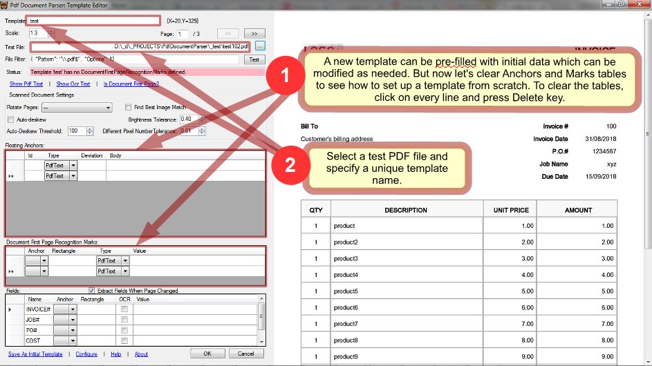
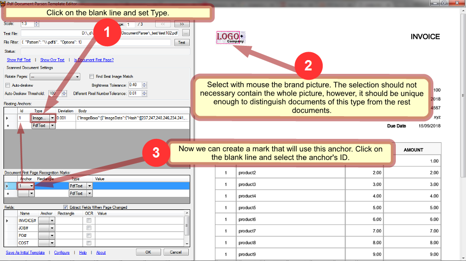
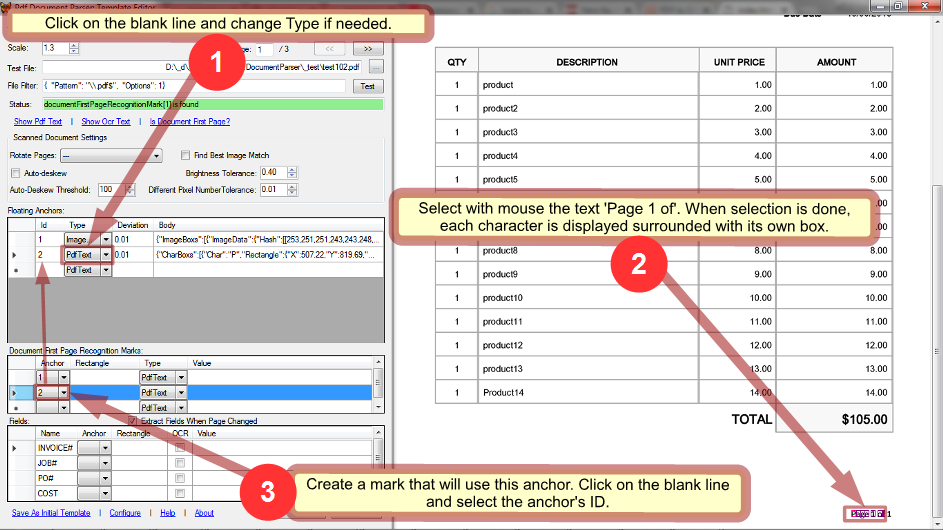
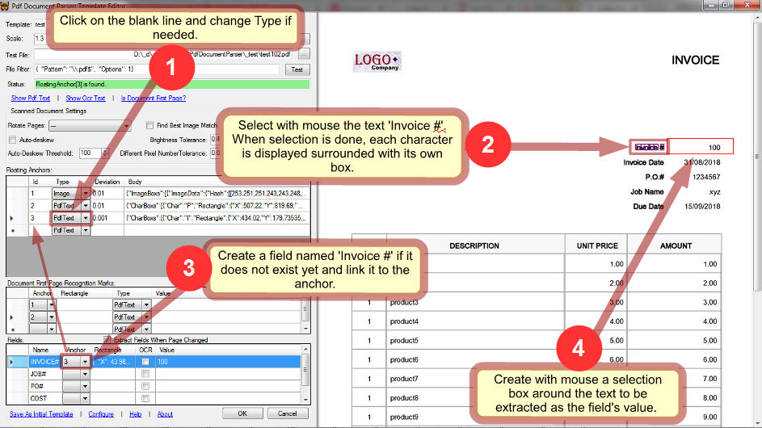
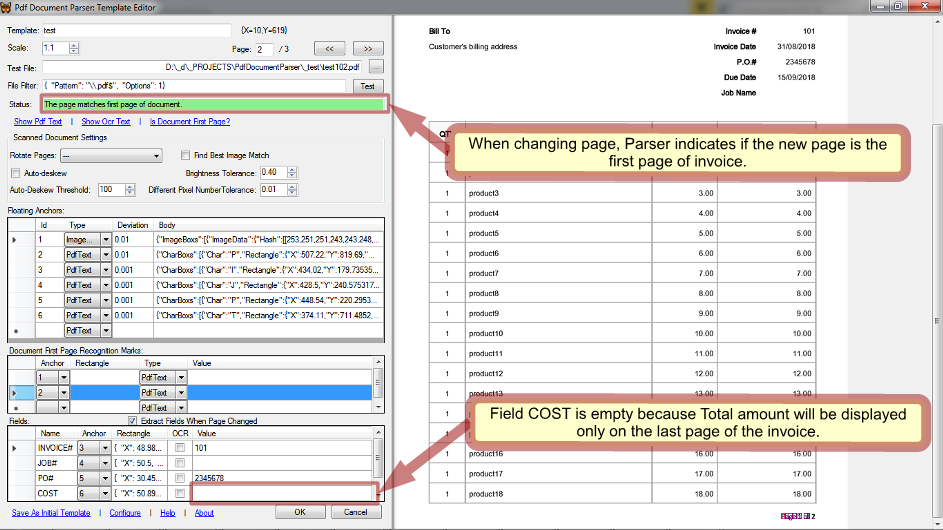
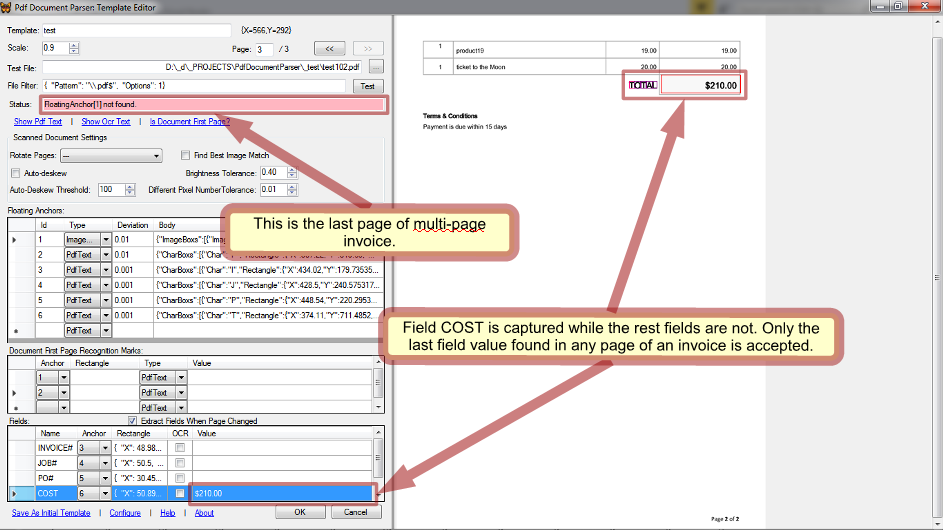

Pdf Document Parser Tutorial: creating a parsing template
1.Create a blank template
It can be created from scratch or copied from an existing one. Usually copying saves time because you can adapt existing settings instead of creating them. However, in this tutorial we'll see how to set up a template from scratch. So, let's remove all the anchors and marks if any. Assumed that in every template we need 4 fields INVOICE, JOB#, PO# and COST so we will not remove them.

2.Create an invoice first page recognition mark with anchor

3.Create a recognition mark that checks the company brand


4.Create a recognition mark that checks if the page is first page of invoice

5.Set fields


6.Go though pages and check how the template works on them


7.Save

That's all! When processing a document, Parser will check it for the template's marks and if they found, choose this template for application.